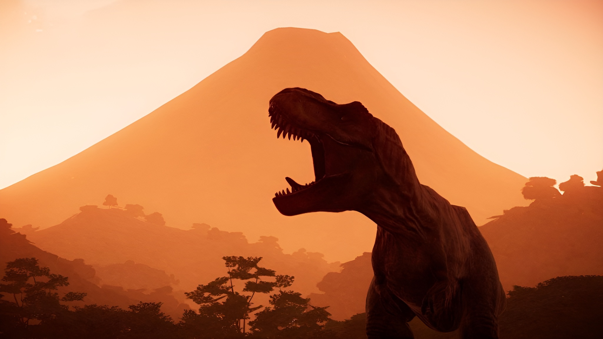
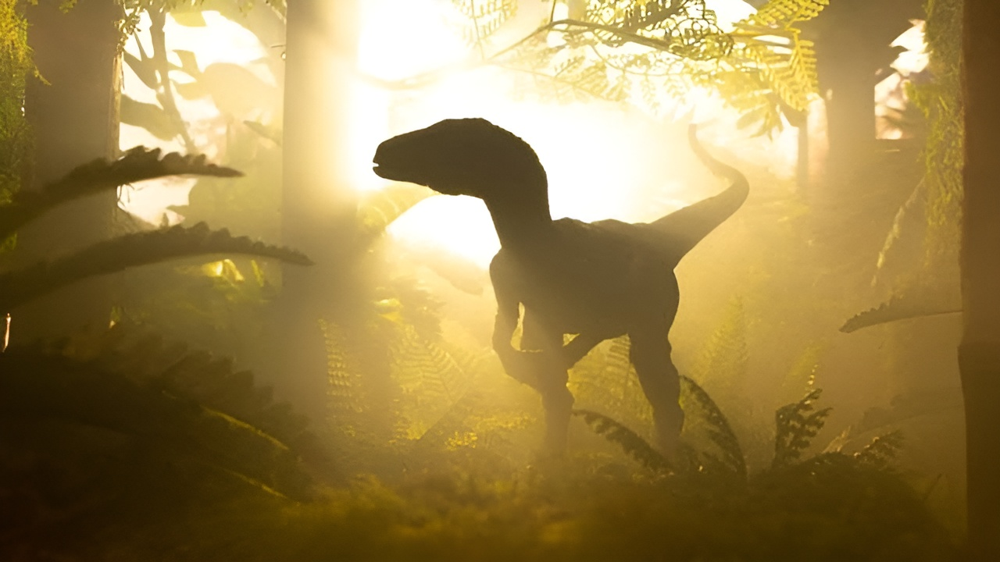
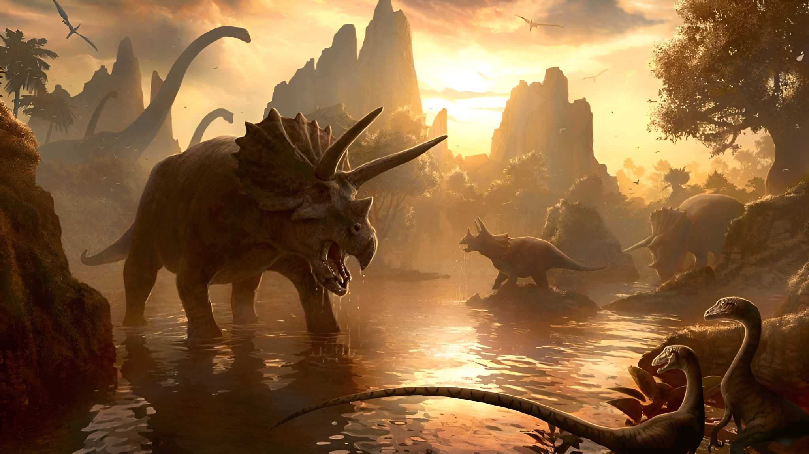
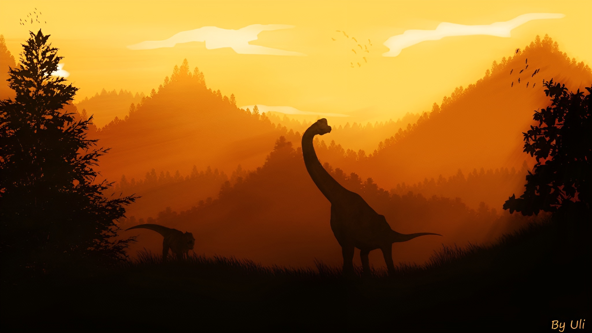
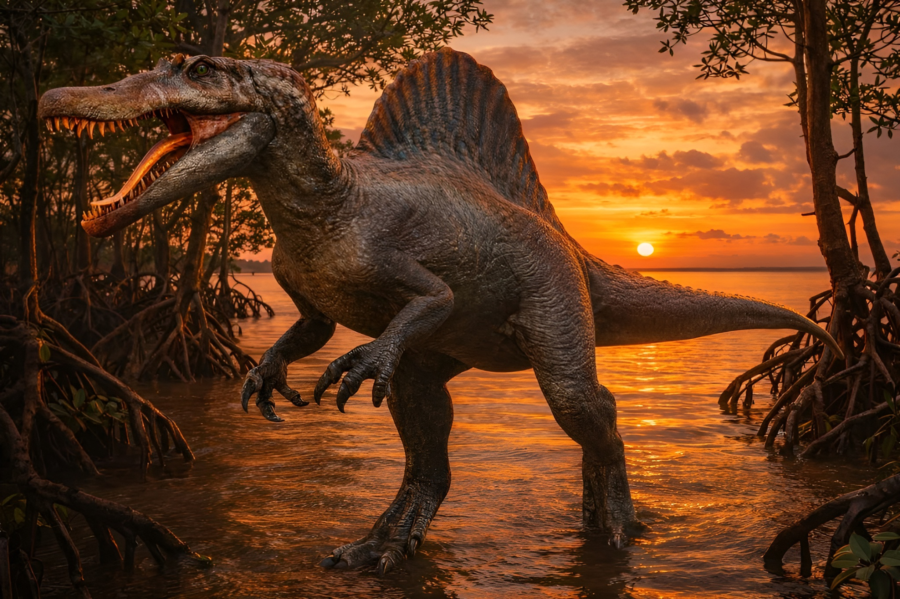

O Tiranossauro rex foi um dos maiores predadores que já viveram na Terra. Ele viveu no final do Período Cretáceo, há cerca de 68 a 66 milhões de anos, na região que hoje corresponde à América do Norte.
O nome “Tiranossauro rex” significa “rei dos lagartos tiranos”. Ele podia medir cerca de 12 metros de comprimento, chegar a quase 4 metros de altura e pesar mais de 8 toneladas. Apesar dos braços pequenos, tinha pernas fortes, visão excelente e uma mordida extremamente poderosa.

O T. rex fazia parte do grupo dos terópodes, dinossauros carnívoros que andavam sobre duas patas. Cientistas acreditam que ele era tanto caçador quanto oportunista, podendo também comer animais já mortos.
O Velociraptor foi um dinossauro carnívoro que viveu durante o Período Cretáceo, há cerca de 75 a 71 milhões de anos, na região onde hoje ficam a Mongólia e partes da China.
Apesar de muitos filmes mostrarem o Velociraptor como um animal grande, na vida real ele era bem menor: tinha aproximadamente o tamanho de um peru grande ou de um cachorro médio. Média cerca de 2 metros de comprimento e pesava em torno de 15 quilos.

Uma das descobertas mais importantes é que o Velociraptor tinha penas. Cientistas encontraram marcas nos ossos dos braços que mostram onde as penas ficavam presas, parecidas com as das aves modernas.
O Tricerátopo foi um grande dinossauro herbívoro que viveu no final do Período Cretáceo, há cerca de 68 a 66 milhões de anos, na região que hoje corresponde à América do Norte.
O nome “Tricerátopo” significa “rosto com três chifres” e fazia parte do grupo dos ceratopsídeos, dinossauros herbívoros conhecidos pelos chifres e pela gola óssea.

Graças aos fósseis e vestígios, os cientistas conseguiram reconstruir a vida desse enorme herbívoro que dividiu o mundo pré-histórico com alguns dos predadores mais perigosos da Terra.
O Espinossauro foi um dos maiores dinossauros carnívoros que já existiram. Ele viveu durante o Período Cretáceo, há cerca de 100 a 93 milhões de anos, na região onde hoje fica o norte da África.
O nome “Espinossauro” significa “lagarto espinho”, por causa das enormes estruturas ósseas em suas costas que formavam uma espécie de vela gigante.

Os cientistas acreditam que ele passava muito tempo perto da água e se alimentava principalmente de peixes gigantes. Por isso, muitos paleontólogos consideram o Espinossauro um dinossauro semiaquático
O Braquiossauro foi um dos maiores dinossauros herbívoros que já viveram. Ele viveu durante o Período Jurássico, há cerca de 154 a 150 milhões de anos, na região onde hoje ficam os Estados Unidos e partes da África.
O nome “Braquiossauro” significa “lagarto braço”, porque suas patas dianteiras eram mais longas que as traseiras. Isso deixava seu corpo inclinado para trás e o pescoço muito alto.

Os cientistas acreditam que ele precisava comer enormes quantidades de vegetação todos os dias para sustentar seu tamanho gigante.